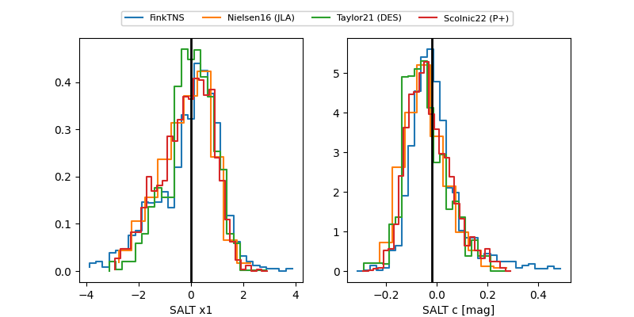

FINK: ZTF25ablhzuv
Lasair: ZTF25ablhzuv
ALeRCE: ZTF25ablhzuv
ZTF25ablhzuv (ztf,fink)
equatorial (ra, dec) = (298.6397,-20.52718)
galactic (l, b) = (20.6653,-22.74028)

last ztfg=19.75
4 ztfg detections